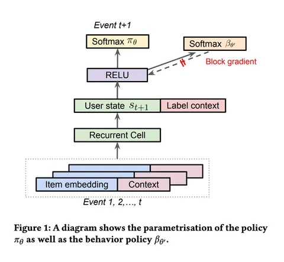
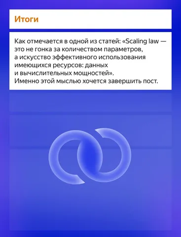
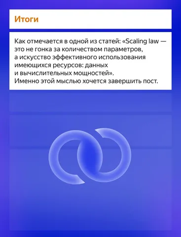
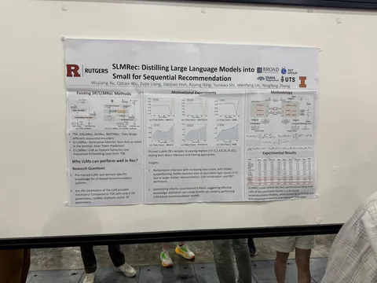
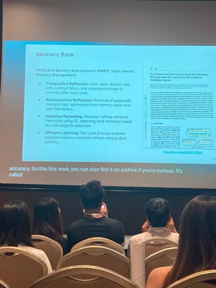
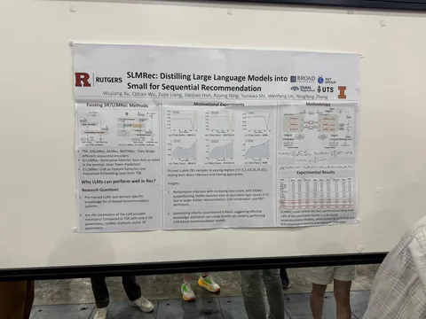
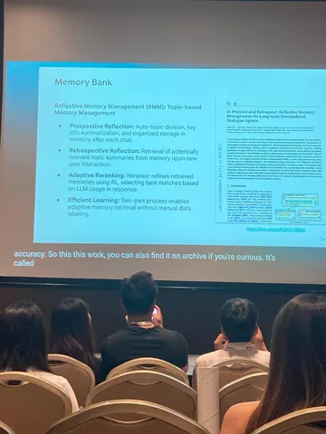

Top-K Off-Policy Correction for a REINFORCE Recommender System
Reinforcement Learning — подход, который логично применять для рекомендаций. При этом работ об использовании RL-алгоритмов в этой области не так много. Сегодня разберём статью 2019 года с конференции WSDM’19, которая посвящена этой теме. В работе описано одно из первых успешных применений RL в рекомендательных системах, внедренное в YouTube на миллионы пользователей и многомиллионные каталоги видео.
Как RecSys сформулировать в терминах RL
Взаимодействие пользователя можно смоделировать как марковский процесс принятия решений:
— состояние — контекст взаимодействия и история пользователя;
— действие — рекомендуемый кандидат (видео и т. п.);
— награда — полезность показа (клик, лайк, время просмотра).
Политика π(a|s) выбирает кандидатов так, чтобы максимизировать долгосрочную полезность.
Дизайн награды
В работе авторы рассматривают горизонт оптимизации внутри одной пользовательской сессии: цель — суммарная полезность за сессию, а не мгновенная. На практике удобно использовать гибридную награду (сочетание клика и времени просмотра), например:
r = α·1_click + β·log(1 + watch_sec)
REINFORCE
Политику π(a|s) моделируют в виде параметрической функции от состояния (истории пользователя), которая выдаёт распределение на действиях. В качестве модели берут рекуррентную нейронную сеть. Политику обучают с помощью алгоритма REINFORCE. Это on-policy-алгоритм, поэтому обновление весов корректно только на данных, собранных текущей политикой. Поскольку это требует сложной инфраструктуры, обучение проводят на залогированных данных.
Off-policy correction
Залогированные данные получены от предыдущей версии рекомендательной системы β(a|s), которую авторы называют поведенческой политикой. Это приводит к смещению в оценке градиента. Чтобы компенсировать смещение, используют Importance Sampling. Для моделирования β(a|s) применяют ту же архитектуру, что и для π(a|s), но обучают только на логах и не пропускают градиенты этой «головы» в общий backbone модели. Для обеих политик при обучении используется Sampled Softmax.
Top-K correction
На YouTube показывают сразу K элементов на одной странице, то есть политика подбирает не одного кандидата, а набор. Делается предположение, что каждый из K элементов сэмплируется независимо из π(a|s), поэтому от вероятности π(a|s) переходят к вероятности попадания на страницу:
α(a|s) = 1 − (1 − π(a|s))^K
Online A/B-тест
Полученную политику π(a|s) использовали как один из кандидатогенераторов основного алгоритма рекомендаций YouTube. Применение off-policy correction увеличило число просмотренных видео примерно на +0,5%. Добавление Top-K correction увеличило общее время просмотра видео на +0,8–0,9%.
@RecSysChannel
Разбор подготовил❣ Артём Матвеев
Reinforcement Learning — подход, который логично применять для рекомендаций. При этом работ об использовании RL-алгоритмов в этой области не так много. Сегодня разберём статью 2019 года с конференции WSDM’19, которая посвящена этой теме. В работе описано одно из первых успешных применений RL в рекомендательных системах, внедренное в YouTube на миллионы пользователей и многомиллионные каталоги видео.
Как RecSys сформулировать в терминах RL
Взаимодействие пользователя можно смоделировать как марковский процесс принятия решений:
— состояние — контекст взаимодействия и история пользователя;
— действие — рекомендуемый кандидат (видео и т. п.);
— награда — полезность показа (клик, лайк, время просмотра).
Политика π(a|s) выбирает кандидатов так, чтобы максимизировать долгосрочную полезность.
Дизайн награды
В работе авторы рассматривают горизонт оптимизации внутри одной пользовательской сессии: цель — суммарная полезность за сессию, а не мгновенная. На практике удобно использовать гибридную награду (сочетание клика и времени просмотра), например:
r = α·1_click + β·log(1 + watch_sec)
REINFORCE
Политику π(a|s) моделируют в виде параметрической функции от состояния (истории пользователя), которая выдаёт распределение на действиях. В качестве модели берут рекуррентную нейронную сеть. Политику обучают с помощью алгоритма REINFORCE. Это on-policy-алгоритм, поэтому обновление весов корректно только на данных, собранных текущей политикой. Поскольку это требует сложной инфраструктуры, обучение проводят на залогированных данных.
Off-policy correction
Залогированные данные получены от предыдущей версии рекомендательной системы β(a|s), которую авторы называют поведенческой политикой. Это приводит к смещению в оценке градиента. Чтобы компенсировать смещение, используют Importance Sampling. Для моделирования β(a|s) применяют ту же архитектуру, что и для π(a|s), но обучают только на логах и не пропускают градиенты этой «головы» в общий backbone модели. Для обеих политик при обучении используется Sampled Softmax.
Top-K correction
На YouTube показывают сразу K элементов на одной странице, то есть политика подбирает не одного кандидата, а набор. Делается предположение, что каждый из K элементов сэмплируется независимо из π(a|s), поэтому от вероятности π(a|s) переходят к вероятности попадания на страницу:
α(a|s) = 1 − (1 − π(a|s))^K
Online A/B-тест
Полученную политику π(a|s) использовали как один из кандидатогенераторов основного алгоритма рекомендаций YouTube. Применение off-policy correction увеличило число просмотренных видео примерно на +0,5%. Добавление Top-K correction увеличило общее время просмотра видео на +0,8–0,9%.
@RecSysChannel
Разбор подготовил

1 806 просмотров · 25 реакций
Открыть в Telegram · Открыть пост на сайте
 

 
